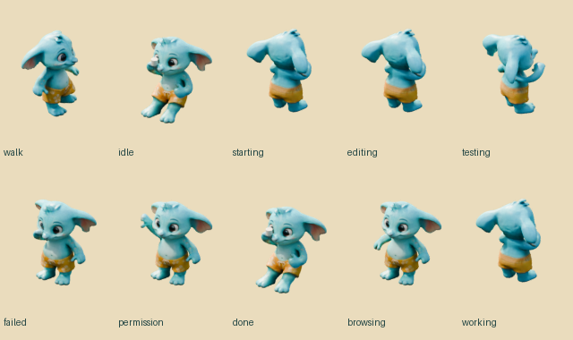

Pip V5 · ближче до милого референсу
Справжня текстурована 3D-модель у Blender. Округла голова, м’які звислі вушка та квітчасті шорти. Новий Pip інтегрований у шпалери. Реакції, ріг, перекриття та керування водою перевірені; виміри — близько 30 кадрів/с.
 Фронтальний рендер нової сітки з текстурами.
Фронтальний рендер нової сітки з текстурами. Тест жесту на адаптованому ригу Quaternius.
Тест жесту на адаптованому ригу Quaternius. Референс дизайну. Верхні зображення — вже рендери 3D-моделі.
Референс дизайну. Верхні зображення — вже рендери 3D-моделі.
Кадри реальних анімацій: ходьба, кава, друкування, огляд, помилка й махання.Сонячний курорт
 Прийняте оточення та камера збережені.
Прийняте оточення та камера збережені.Ранній чорновий цикл води: 12 секунд, 30 кадрів/с. У поточних шпалерах вода має фінальний рендер 1920 × 1080.
Поточні шпалери → · новий персонаж V5.